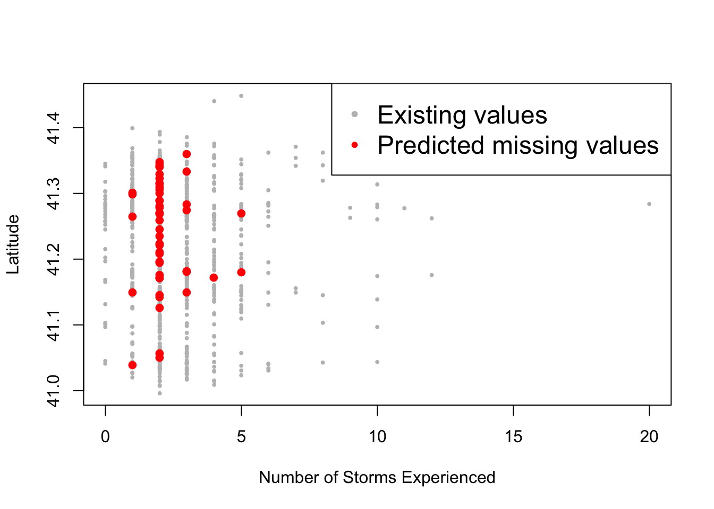

Section 5 Cleaning
Data cleaning is the process of getting data ready for statistical analysis. In contrast to structuring the data, the target anomalies in this case are variable values such as missing values, outliers, skewed distributions, etc.
5.1 Fixing skewed distribution
Data are skewed when their distribution is not symmetrical but rather favors either the left or right. Sometimes, to facilitate statistical analysis, we need to transform skewed data so that it becomes normally distributed instead. Several tests like PCA analysis require multivariate normality. First we will read in data to use for this part of our practice.
We will then examine a plot.
# Example of skewed data
{x <- data$nstorm
h <- hist(x, breaks=20, col="grey")
xfit <- seq(min(x), max(x), length=40)
yfit <- dnorm(xfit, mean=mean(x), sd=sd(x))
yfit <- yfit*diff(h$mids[1:2])*length(x)
lines(xfit, yfit, col="red", lwd=2)}
The plot above shows a good example of skewed data. To deal with this type of data, a good first tool to try is some form of logarithmic transformation, which reduces the scale of the larger values more substantially.

While the previous log-transformation seem to have worked, it is not entirely correct because the variable nstorm has 0 values which cannot be represented in logarithms. In this case, one of the commonly used methods is square root.

While these two are not the only types of transformation you can make, they are certainly two of the most frequently used.
5.2 Treating outliers
Outliers are extreme values in datasets. If not detected and handled appropriately, they can affect the accuracy of the predicitions and analysis. Non-resilient statistics are those that can be affected by severe outliers, like a mean calculation getting pulled in the direction of extreme values. Resilient statistics are those that can withstand a few outliers, like a median value.
Treating outliers depends on a good knowledge of the data and it is up to the data analyst to decide on how to go about on fixing them. Selva Prabhakaran gave some ways of handling outliers that we are going to show below.
You can detect outliers using a boxplot where they will show up as dots outside the whiskers:
# For continuous variable
outlier_values <- unique(boxplot.stats(data$nstorm)$out) # outlier values.
boxplot(data$nstorm, main="How many storm have you experienced?", boxwex=0.1)
mtext(paste("Outliers: ", paste(outlier_values, collapse=", ")), cex=0.6)
# For categorical variable
boxplot(nstorm ~ worry, data=data, main="Number of storms experienced across levels of worry")
It is worth noting that outliers should not always, if ever, be ignored or removed. While they are anomalies that make modelling difficult, quite often they represent a part of the data’s narrative which should not be swept aside without consideration. The techniques we describe are for outliers which, for whatever reason, do not belong in the dataset, whether that be corrupted data, mislabelled points, or typos. If an outlier must be removed for a condition of normality to be met, it is in the hands of the statistician to explain why such steps were necessary in light of the procedures being run.
Approaches for outlier treatment include imputation with mean, median, or mode. We can also cap the values, predict them, or delete the observations. Deletion should only be done in the case that there is clear, undisputable evidence that the data entry was recorded incorrectly.
5.3 Fixing missing values
Ways of detectng missing values (NA) include the summary and anyNA().
## [1] TRUE## Min. 1st Qu. Median Mean 3rd Qu. Max. NA's
## 0.00 2.00 2.00 2.58 3.00 20.00 50Sometimes you want to access only the entries that are not missing within a specific column. For these cases, the is.na() function is incredibly useful. It returns a vector of True/False for entries which are missing or not missing. In R, if you want to flip a Boolean (T/F) value, simply use the ‘!’ character. This comes in handy when, for instance, we want only the non-missing values
## [1] TRUE## [1] 2 1 3 3 2 5 3 5 1 2 3 2 2 4 1 4 0 3 2 6 3 3 3 1 2
## [26] 2 2 2 2 5 2 2 4 2 5 2 5 3 1 8 2 2 3 2 2 2 2 2 2 5
## [51] 2 2 1 2 2 3 1 2 2 3 2 7 1 2 4 1 4 2 2 2 4 3 2 1 1
## [76] 2 2 1 2 2 2 3 6 4 5 2 2 3 3 2 2 1 2 2 4 2 4 2 2 3
## [101] 2 2 2 2 3 2 2 3 1 2 3 2 2 2 3 3 2 2 2 2 2 5 2 2 2
## [126] 2 4 2 0 1 2 1 5 2 3 5 3 2 2 2 2 4 6 3 2 3 3 1 2 0
## [151] 2 2 2 1 2 3 2 3 4 2 2 0 1 1 3 12 4 4 2 2 3 5 2 3 1
## [176] 1 2 4 9 5 2 1 0 1 4 2 4 3 1 1 1 2 2 2 2 2 2 3 2 3
## [201] 6 3 2 4 3 2 3 3 3 3 1 2 2 3 2 3 4 2 1 2 2 4 0 3 4
## [226] 2 5 2 4 3 3 5 2 1 2 2 3 2 2 2 3 2 1 2 2 2 2 1 3 2
## [251] 3 4 3 3 3 2 1 3 2 2 2 11 2 2 2 2 1 2 3 2 2 5 2 2 3
## [276] 2 2 2 3 2 2 2 10 2 2 3 3 0 2 2 2 3 2 2 0 2 2 3 2 2
## [301] 3 2 2 3 1 3 3 2 6 7 5 1 2 3 1 1 3 1 2 2 5 2 4 1 1
## [326] 2 2 2 2 4 6 1 0 4 2 4 2 2 2 2 2 4 2 4 2 3 2 3 2 1
## [351] 2 2 2 2 1 6 1 2 3 2 1 1 2 2 3 2 3 4 2 2 3 2 2 2 10
## [376] 2 2 2 2 1 0 2 3 3 3 3 2 3 2 3 3 2 1 3 5 1 2 2 2 2
## [401] 2 5 3 0 2 2 2 4 1 3 2 3 3 2 4 4 2 2 2 1 3 1 1 5 2
## [426] 4 1 4 2 1 2 2 2 2 3 2 3 1 1 2 1 3 2 12 5 0 3 5 2 2
## [451] 1 4 4 0 4 8 2 7 9 1 3 2 2 2 2 1 3 1 2 2 2 3 2 1 0
## [476] 0 3 2 0 2 4 0 3 1 2 2 2 0 4 3 2 3 10 3 2 2 2 5 10 3
## [501] 1 1 1 3 2 6 2 2 1 3 3 2 3 2 2 5 3 3 2 2 3 2 3 2 2
## [526] 4 2 2 3 2 4 3 2 5 2 1 3 1 3 2 1 2 2 4 2 3 3 3 1 1
## [551] 2 1 3 4 1 2 6 2 6 2 3 0 2 3 4 2 2 2 1 1 2 2 2 4 2
## [576] 3 5 4 2 10 2 6 1 3 4 2 1 3 2 1 2 2 2 2 3 3 1 2 3 8
## [601] 3 2 2 2 1 5 1 1 3 1 4 5 2 0 2 2 1 2 1 2 2 2 1 8 1
## [626] 2 2 5 2 3 2 2 1 3 1 7 4 4 2 2 2 2 2 20 2 1 3 1 0 2
## [651] 2 3 2 2 3 5 1 0 4 10 4 0 3 5 10 1 3 2 2 2 2 1 3 5 2
## [676] 4 3 2 1 2 4 2 2 4 2 5 3 2 0 3 2 1 2 4 1 1 1 2 2 3
## [701] 2 1 5 2 2 2 2 2 2 2 1 2 3 3 2 5 1 3 3 3 2 1 2 1 2
## [726] 7 5 3 2 2 8 4 2 3 4 2 1 1 4 4 3 2 4 3 2 2 10 1 2 4
## [751] 5 2 5 2 3 2 2 2 2 1 2 0 2 2 2 2 2 3 5 2 2 3 2 2 0
## [776] 2 2 2 2 3 3 2 3 2 6 3 3 1 5 3 2 2 2 5 3 2 2 2 0 2
## [801] 4 3 3 1 2 1 5 3 3 2 2 3 3 4 3 2 2 1 1 6 3 5 1 3 3
## [826] 1 4 3 2 1 3 2 5 0 2 2 2 4 2 3 1 4 3 4 1 2 6 1 2 2
## [851] 2 6 3 2 2 3 3 3 1 3 4 3 3 2 1 3 1 2 4 3 1 3 3 1 4
## [876] 2 2 3 1 1 2 2 2 1 1 6 2 2 2 1 8 2 2 2 3 3 1 1 2 5
## [901] 4 3 3 2 4 3 0 3 5 2 1 2 4 2 1 2 2 2The simplest way to handle missing values is by removing all of the corresponding observations using tidyr::drop_na() or, in some cases, removing a variable itself. The goal of treating NA values is to expereince as little data loss as possible while maintaining your overall data integrity. If, for example, a column has only 5 real values and 95 missing values, it’s probably not worth keeping in your dataset. If a row has only 1 real value and 11 missing values, it also might not be worth keeping. The discretion of treatment is largely in the hands of the analyst. The command below is a sweeping way to remove rows with any missing values, which is effective when you have rare missing values and voluminous data to choose from.
## # A tibble: 776 x 13
## nstorm worry nevac prepared homeloc nyear gender income politics age zone
## <int> <int> <int> <int> <int> <int> <int> <int> <int> <int> <chr>
## 1 2 3 0 3 2 86 1 4 3 86 A
## 2 3 4 0 3 3 19 2 6 2 83 A
## 3 3 6 1 1 1 52 1 5 3 64 A
## 4 2 1 0 2 3 15 1 5 3 66 A
## 5 1 3 0 3 3 4 1 3 1 38 A
## 6 2 6 0 2 2 17 2 6 2 50 A
## 7 3 5 0 2 3 70 1 4 4 71 A
## 8 2 7 0 2 1 24 2 5 2 60 A
## 9 2 5 0 2 2 18 2 5 2 55 A
## 10 1 3 1 3 2 2 1 6 4 51 A
## # … with 766 more rows, and 2 more variables: lat <dbl>, long <dbl>However, if dropping all of the rows with missing values will affect the quality of the data or its breadth, then another option is to replace the missing values with the mean/median/mode of the variable, or to predict for them using an appropriate modelling algorithm. There are several packages out there that are solely dedicated to treating missing values including VIM and MICE.
In this next example, we’ll try to predict the 15 missing values in the variable nstorm (number of storms the survey respondents have experienced) using the variables that has no missing values: zone, lat, and long.
# Imputation using MICE
library(mice)
# Building the mice model
mice_model <- mice(select(data, zone, lat, long, nstorm), method="rf", printFlag=F)## Warning: Number of logged events: 1# Predicting the missing values
# generate the completed data
mice_prediction <- complete(mice_model)
# checking for NAs
anyNA(mice_prediction)## [1] FALSEThen we can visualize the data to see how well the imputation has performed. However, the best way to assess the accuracy is to compare actual values with predicted values using measures such as: MSE, MAE, MAPE, etc.
# Visualizing the prediction
non_na_latitude <- data$lat[!is.na(data$nstorm)]
non_na_nstorm <- data$nstorm[!is.na(data$nstorm)]
na_latitude <- mice_prediction$lat[is.na(data$nstorm)]
na_nstorm <- mice_prediction$nstorm[is.na(data$nstorm)]
plot(non_na_nstorm, non_na_latitude, col="grey", pch="•", ylab="Latitude", xlab="Number of Storms Experienced")
points(na_nstorm, na_latitude, col="red", pch="•", cex=2)
legend("topright", c("Existing values", "Predicted missing values"), col=c("grey", "red"), pch="•", cex=1.5)
Other ways to impute the missing values are with mean, median, or mode.
# Assign the data to prediction
prediction <- data
na.observations <- is.na(data$nstorm)
prediction$nstorm[na.observations] <- median(prediction$nstorm[!na.observations])
# Visualizing the prediction
na_latitude <- prediction$lat[na.observations]
na_nstorm <- prediction$nstorm[na.observations]
plot(non_na_nstorm, non_na_latitude, col="grey", pch="•", ylab="Latitude", xlab="Number of Storms Experienced")
points(na_nstorm, na_latitude, col="red", pch="•", cex=2)
legend("topright", c("Existing values", "Predicted missing values"), col=c("grey", "red"), pch="•", cex=1.5)
For mode, there is no built-in function in R, but you can access one here: